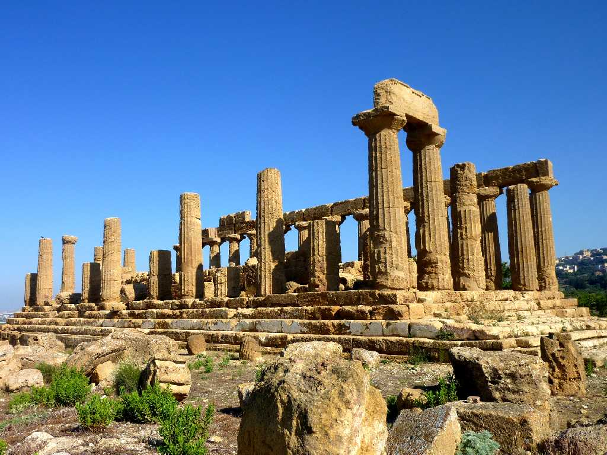
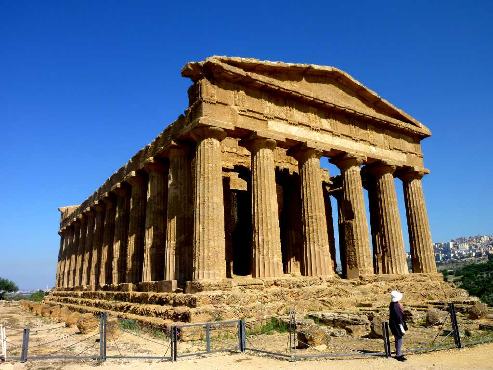
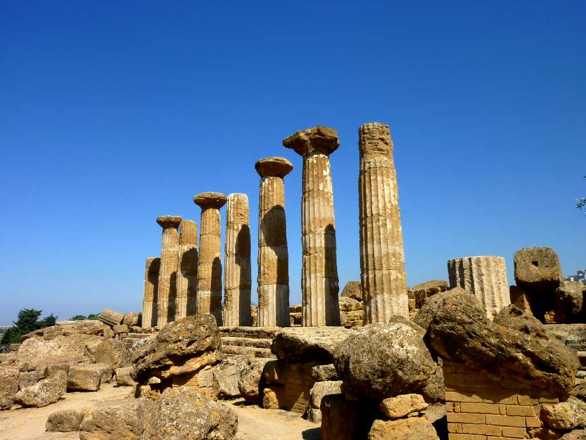
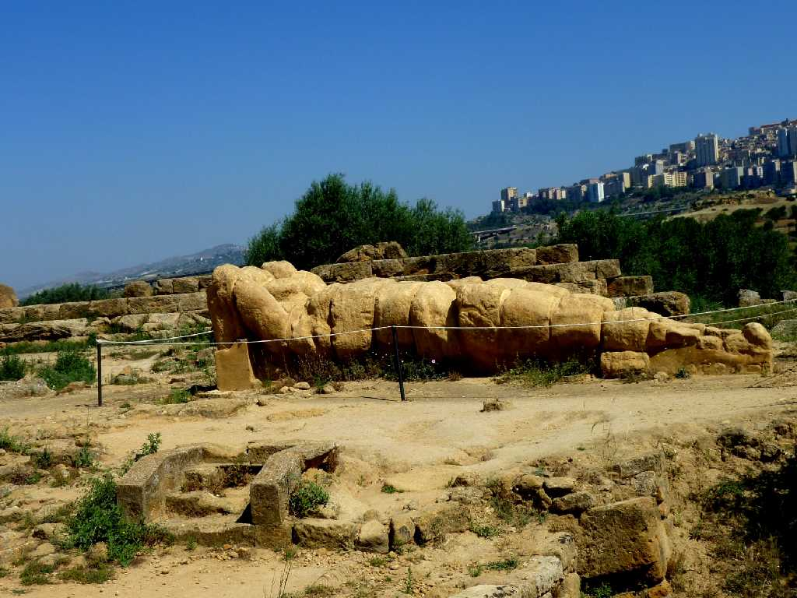
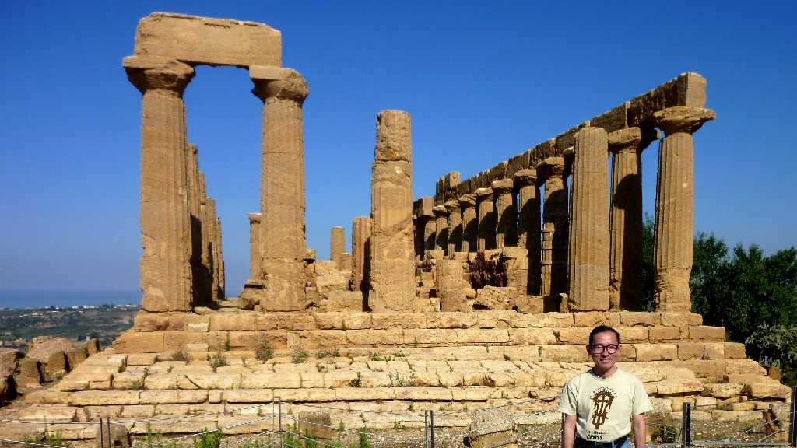
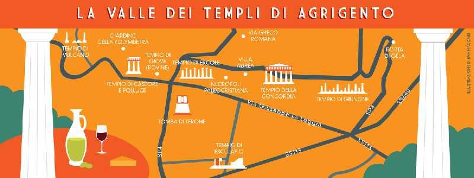

Tempio di Giunone (Temple of Hera) Valle dei Templi Agrigento
アグリジェントの神殿の谷にある紀元前４８０年カルタゴに勝利したことを記念して建てられたゼウスの妻ヘラ像が安置されていたヘラ神殿

Tempio di Concordia
コンコルディア神殿は紀元前５世紀に建てられ紀元６世紀にキリスト教の教会として改修されたためドーリア式神殿として保存状態が良くギリシャ神殿の最高傑作とも云われている

Tempio di Ercole (Temple of Hercules)
ヘラクレス神殿は３０万人古代都市アグリジェントで最も崇拝された神ヘラクレスを祭った最古の神殿

Tempio di Giove (Temple of Zeus)
人の形をした８ｍの柱が倒れて残る最高の神ゼウス神殿跡

June 17 2011 Valle dei Templi Agrigento
アグリジェントはギリシャ人により紀元前６世紀から紀元前５世紀にかけて築かれた街で紀元前４８０年のカルタゴとの戦いに勝利したころ繁栄が頂点に達した
